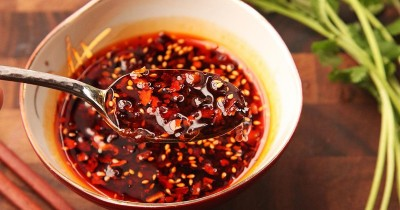

Китайский острый соус

Ингредиенты
- Соевый соус - 100 мл
- Кленовый сироп - 60 мл
- Коричневый сахар (по желанию) - 15 гр
- Кукурузный крахмал - 25 гр
- Соус чили - 25 гр
- Рисовый уксус - 15 мл
- Перец красный молотый - 3 гр
- Чесночный порошок - 3 гр
- Порошок имбиря - 3 гр
Рецепт приготовления
- Этот пятиминутный простой рецепт позволит разнообразить любимые блюда китайской кухни. Его также можно использовать при приготовлении жаркого из мяса, овощного рагу, рисовой стеклянной лапши и в других блюдах. Готовый соус получается очень ароматным и пикантным на вкус.
- Китайский острый соус получается довольно острым, но при желании оригинальный рецепт можно немного изменить. Регулируя количество острых и сладких продуктов, можно добиться идеальных пропорций по своему вкусу. Любителям острого добавить больше перца чили или измельченного красного перца, а тем кто боится слишком острой пищи можно положить больше кленового сиропа или добавить к рецепту щепотку коричневого сахара.
- Основу этого соуса, как и большинства китайских соусов, составляет соевый коричневый соус. Соевый соус - очень полезный низкокалорийный продукт, который заменяет на кухне соль, масло. Соевые бобы, из которых он изготавливается, содержат большое количество аминокислот, минеральных веществ и витаминов. В магазинах сейчас очень большое разнообразие этого продукта. Есть несколько правил при выборе соевого соуса. Качественный продукт должен продаваться обязательно в стеклянной прозрачной таре. Сам соус коричневого цвета и в нем не должно быть осадка или мутных вкраплений. В состав соуса могут входить соевые бобы, уксус, пшеница, соль и сахар.
- Готовится китайский острый соус очень быстро и просто. С его приготовлением справится даже человек далекий от кухни. Главное купить нужный и качественный набор продуктов.
- В отдельную посуду необходимо поместить все ингредиенты китайского острого соуса и взбить всё кухонным венчиком до однородной консистенции. Пробуя на вкус готовый соус, можно добавить по своему вкусу те или иные продукты - подсластить слишком острый соус или, наоборот, сделать его еще более пикантным с остринкой. Соус получается довольно жидким. Можно оставить его так или немного загустить. Для этого соус нужно перелить в небольшую кастрюлю и на медленном огне при постоянном помешивании ложкой довести его до кипения и выключить огонь.В результате готовый соус станет более густой. Затем его можно охладить и перелить в герметичный контейнер. Таким образом, готовый соус можно хранить до 4 дней в холодильнике.
- Китайский острый соус готов. Приятного аппетита!
Вернуться к списку блюд